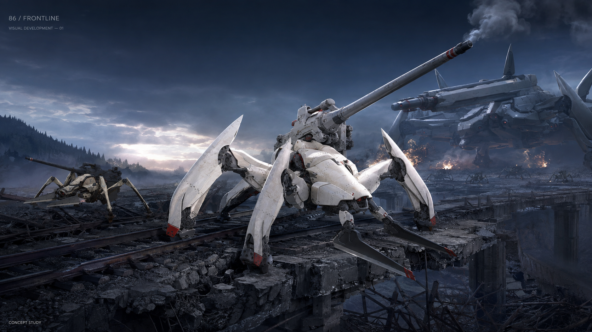

左右移動、自動開火，走位選擇補給。重型射界命中時優先損失一架僚機；沒有僚機時承受可用裝甲吸收的傷害。透過副砲破壞、誘導突進與散熱反擊突破敵軍。
WASD移動、滑鼠瞄準，主砲自動開火，僚機自行迎擊近敵。左鍵啟動火控超頻；右鍵沿操作方向推進，碰撞沿途生效；Space在游標位置呼叫支援或部署誘餌。
掩體能擋直射與移動，曲射可跨越。道具靠近直接拾取，以原模型、色彩及短用途辨識；滿狀態也能回收。目前是固定場景、單一Boss同場，持續接敵直到主機失能。
以《86》的多足機甲和軍團為美術參考；遊戲數值、操作及人物戰況回報是本作改編。蕾娜負責整備與出擊，辛負責戰中回報。尚無Live2D或角色原聲，3D僅保留研究。
視覺來源 · 音訊作者 · 特效來源